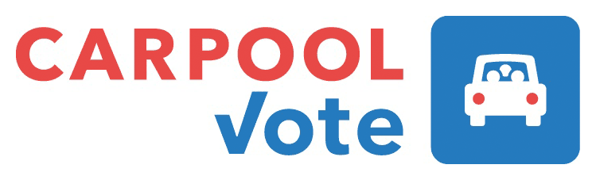

14 things I learned working on
Richard Westenra
Just because it hasn't already been done, doesn't mean it's not a good idea.
🇺🇸
Non-Americans care a lot about American democracy.
Your site needs to be ready before your volunteers are ready
Time zones are hard

Github is amazing
Open-source volunteers
!==
coworkers
Be careful with your instructions
🍞💩🍞
Advantages to keeping it low-tech:
- 👍 Encourages newbie dev contributions
- 👍 Makes senior devs less crucial
- 👍 Speeds up onboarding
Accessibility is super-important
Native components are great
Polyfills for native components often suck
Time zones are hard
carpoolvote.com
github.com/voteamerica
codebar contributor wall of fame:
Sasjkia Otto, Jon Kelly, Jo Franchetti, Jen Spencer, Izabeka Jelonek, Eli Schutz, me, you
Join us!
We're hiring, I think
Thanks!
btw I am on the interwebs:
richardwestenra.com richard@richardwestenra.com twitter.com/richardwestenra github.com/richardwestenra linkedin.com/in/richardwestenra facebook.com/richardwestenra